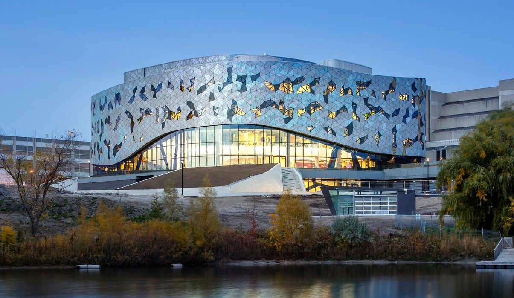
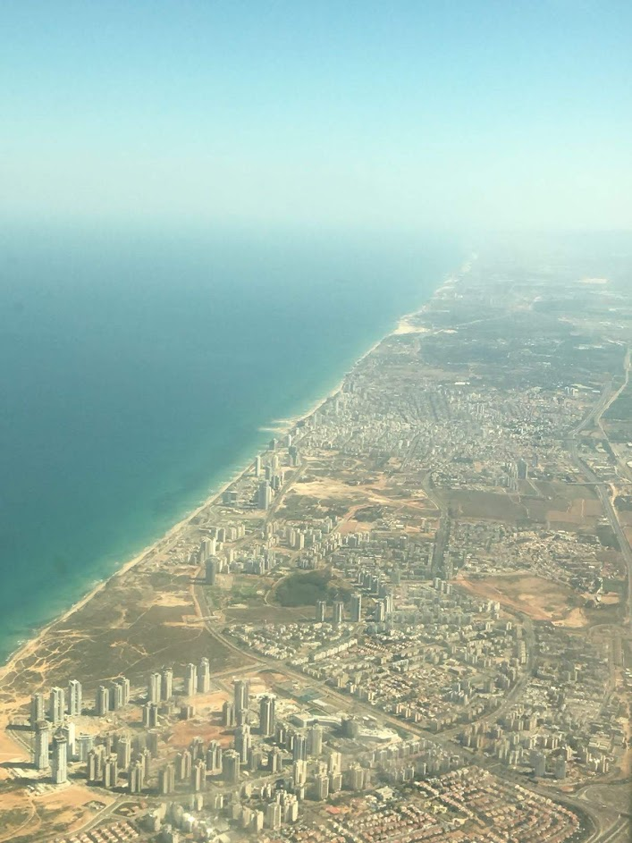
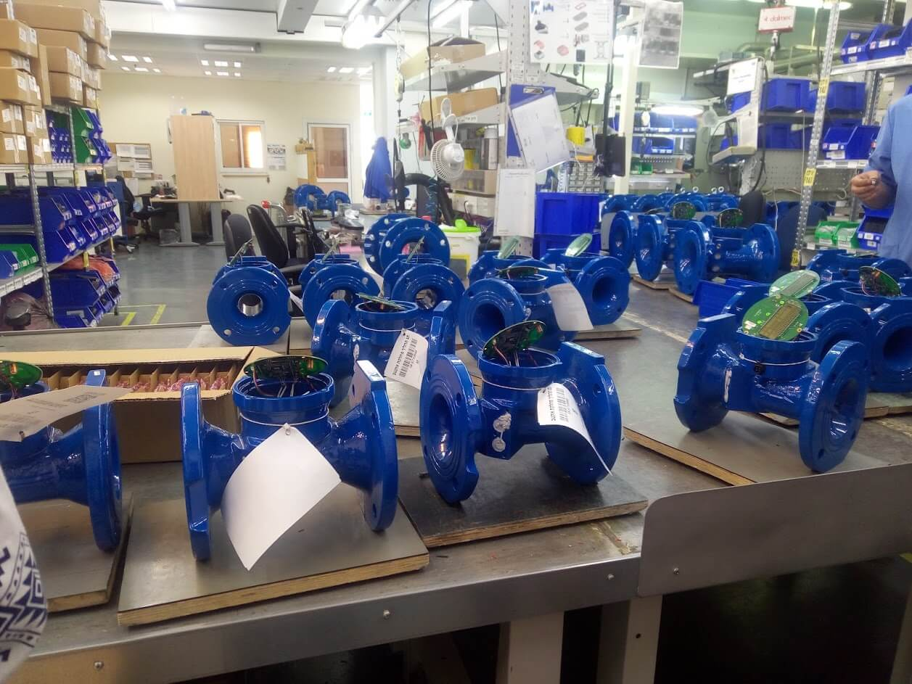
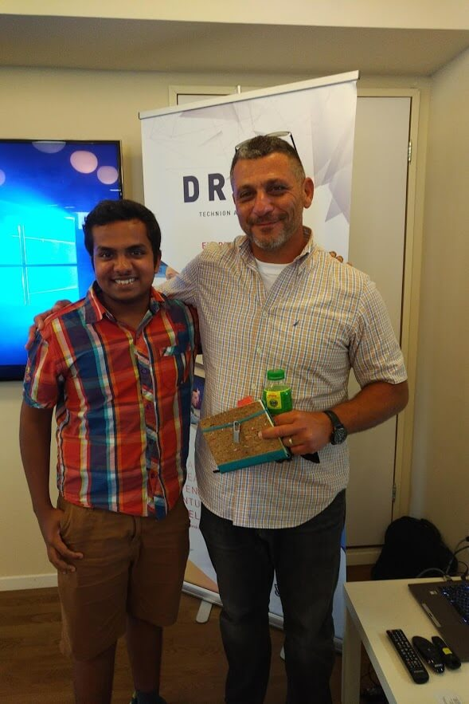
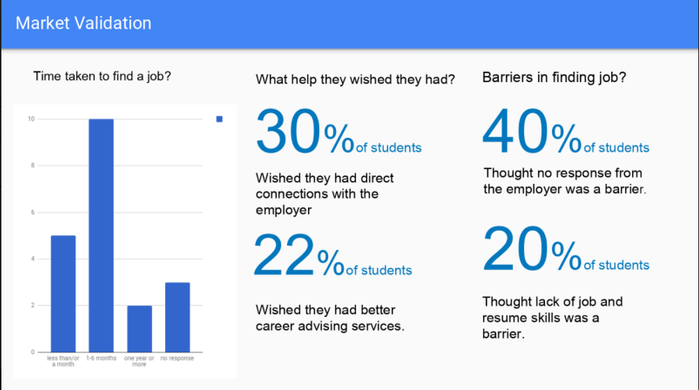
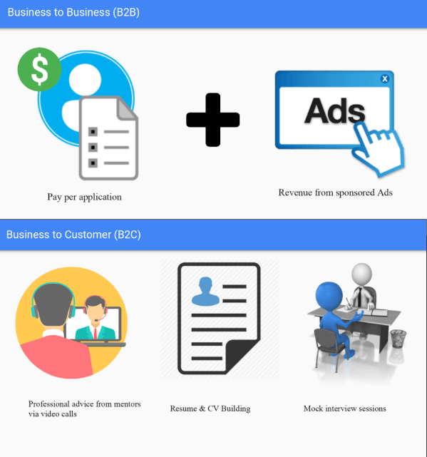

Experiential Course on Entreprenuership
York University X Technion University, Summer 2018
In the 21st century entrepreneurship has become a greater deal than ever. The liberalization of market and existence of venture capital, incubation labs and pitch competition has made it easier for new start ups to rise. One such incubation lab is at my school called the Bergeron Entrepreneurs in Science and Technology. It was through thier Technion program, I got access to world class education and experience with startups and tenets of entrepreneurship. Here is what I learned and experienced in duration of this program.
The program was divided into two segments, the first part being in Canada and the other part in Israel. The Canadian part was prepared as an orientation program, introducing us to the basics of entrepreneurship and the Canadian context. Team building exercises and listening to speakers was a major part of it. There were about 20 students along with me, most of them studying computer science or engineering at Lassonde and rather few were BBA students from Schulich. During the group exercises I got to know everyone had a strong ideation drive despite being different individuals. This made the lectures and activities quite engaging and fraught with energy.
We were also introduced to different speakers. Most of them were entrepreneurs in Canada who talked extensively about the startup culture, their history and their advice when it comes to bringing your idea to fruition. There were also some who had previously taken the course that talked about their experiences and gave advice based on their own experience. Through the orientation camp I realized that although this course was challenging and involved immense hard-work and sleepless nights, it was also the unique experience to spending time in the heart of startup culture and being a part of the fast paced, energy packed life of entrepreneurs.
 During the long flight to Tel Aviv, I started reading the book Start-up Nation by Dan Senor and Saul Singer. Through this book I understood why Israel is world's center of the start-up movement. When the state of Israel was founded, it was in a hostile territory, with little to no economic resources and a significant lack of arable land. The developments that lead to the current economic and political powerhouse is no short of a miracle. And this miracle was developed in Israeli communalism, ingenuity and perserverance.
Couple of minutes from landing, we were greeted by the white beaches of Tel Aviv and towering skyscrapers inching towards the sky, a testament to the country's skyrocketing growth. The couple of days we travelled to various places in the country. It was quite astonishing to see the variety of cultures and landscape that is compressed in this tiny land. After a day's stay in Tel Aviv, we set out for Judean Desert. The trip took just couple of hours and yet the landscape was completely altered.
After a bit of sight seeing, we set out for Technion University in the coastal city of Haifa. This where we spent most of our time in Israel, attending lectures, brainstorming sessions and listening to guest speakers. Sometimes we would visit startups and personally talk to their CEOs and get first hand experience. We learned how to make value propositions, market, needs assessments, business plans, revenue models and expansion plans. 
One of the remarkable startups was Arad Water. We visited their manufacturing plant near Haifa. They make a world class lineup of water meters. The unique value proposition that they presented was an intelligent design and a supporting web framework integrated with data analytics. There is also high need in the arid regions of Israel and its neighbours to control and reduce water usage. Which has placed the fledgling startup in a lucrative market. Another influential startup that we met was GivenImaging. Their innovative pill camera design is the solution to gastrointestinal imaging which is often the intrusive method of using fiber optics. It also provides much better image and can be improved to provide at site assistance. Their approach towards the medical market followed one of the disrupter, launching and expanding quickly before competitors get a chance to adopt the design. 
One of the most interesting parts of our studies at Technion was coming across the cutting edge technology being developed. As a space engineering, visiting the labs of their aerospace department was astounding. There were replicas of famous jet engines like F-16 fighter's Pratt & Whitney F100 turbofan engine. It was split in half to show the chambers where the sucked in air was heated and combusted by injection of fuel. They also had a prototype jet engine in the lab and conducted a static fire for us. It was incredibly loud and powerful even though it was tiny compared to a real life jet engine. It definitely stirred my interests in propulsion systems.
As we learned more about startups, we had to put our knowledge and skills to a test. We were each divided into groups and had to come up with a startup idea. The ideation process was really difficult as each and every idea was deeply scrutinized. Eventually we drew from our experiences as students and came up with the idea of J-match. J-match was intended to be student focused application that allows employers to directly hire students from university. However since there were strong entrenched competitors such as Indeed, Linkedin and Monster.com, it was integral for us to stand apart. We realized that each of these apps had one biggest problem, i.e. it was not student oriented but focused on a general audience. And there was little to no support system to develop job hunting skills, which was also critical for students.
 We conducted a survey of post-secondary students at multiple universities, and realized that one of the key needs for them was a strong feedback system to improve their profiles. We now had an idea how to set us apart. Firstly we wanted to focus only on post-secondary students. By using an inter-university blockchain network, we could gather, authenticate and securely store student data as user profiles. This data is only retrieved when the two-way job search occurs. This happens when either the student searches for the job or employers searches for candidates. A machine learning AI could then process the profile of the candidate, search parameters and available postings to present multiple "matches" ordered by a calculated match percent. The candidate can either show interest or the employer can and if both show interest in each other, a match is made and they would be added in the candidate pool. After following the interview and extensive review, the employer fills out a feedback form. This form with the accepted candidate data is processed and presented as a report to the candidates, suggested how they can improve their future applications.
 One of the key concepts that is integral in the execution of startups is their business model. For our idea, we created two models. The business to business model is for the employers that would get charged per job posting. Additionally using non-job related ads to non-premium users as another source of income would also be beneficial. For the business to consumer model we will keep job-applying part free to use with ads, however some personal development features would be available with subscription. These will include one-on-one sessions with mentors, mock interview sessions and resume-cv building workshops.
With all these tools, we presented a professional pitch to seasoned VCs. Our presentation impressed them and they provided their critical views on the presentation. We felt a strong sense of accomplished as the progress we made personally and professionally reflected well on all our presentation. Although I didn't win the pitch competition, I saw the quality of all presentations and I felt proud of us all. This was quite evident when we attended an actual pitch competition at Tel Aviv university. Here we had several fledgling startups competing for a cash price of $100,000. It was serious all right. And I was quite confident to ask the right questions. By seeing their presentations we could easily see how similar our pitches were to the real deal. In fact, we could easily make sense of most things that were presented why they were presented. In fact, it wasn't hard to visualize any one of us on the stage. We all had reached a certain stage.
It is hard to deny the influence this trip had on me. It was my first year and I faced all adversities a strapped international student faces in Canada. I overcame all of that, yet it was quite difficult to see beyond my academic life. After doing this course, I realized the endless potential I have. I know that it will be extremely difficult to do more with work and school, but I know that if I keep pushing, I will realize my goals eventually. By the example of Israel, entrepreneurs and their startups, I have learned to recieve failures as avenues of self-improvement. I have taken their perserverance as my driving force. I have taken a piece of each experience in this course and implemented in my life.